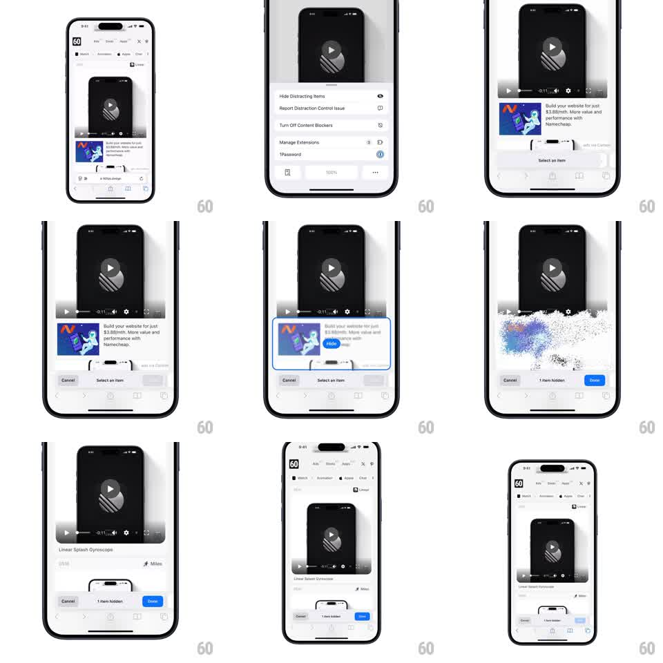

Media
Frame-by-frame

Rebuild this animation 1:1: Safari's Hide Distracting Items - in selection mode, tapping a page element disintegrates it into a cloud of particles that scatter and fade, and the toolbar counts "1 item hidden" until you tap Done.

Rebuild this animation 1:1: Safari's Hide Distracting Items - in selection mode, tapping a page element disintegrates it into a cloud of particles that scatter and fade, and the toolbar counts "1 item hidden" until you tap Done. ## Integration Integration: stack-agnostic spec - springs given as stiffness/damping, timed motions as duration + curve; map every value to your framework and animation library of choice. ## Scene Safari showing a webpage, page menu sheet (Hide Distracting Items, Report Distraction Control Issue, ...), then selection mode: a bottom bar with Cancel / "Select an item" / Done, tappable elements outlined. Tapping an element shows a blue highlight with a "Hide" button. ## Motion spec Pattern: selection mode + particle disintegration. - Enter selection mode: page dims slightly, bottom bar slides up (200ms). - Element pick: blue outline + "Hide" pill appears on the tapped element (150ms, ease-out). - On Hide: the element explodes into ~200-400 tiny particles sampling its own colors, bursting outward with drift and rotation, fading over ~700ms; the element's layout space collapses (content reflows, 250ms ease-out). - Bottom bar updates to "1 item hidden" and Done turns blue (150ms). - Done exits selection mode (bar slides down, dim lifts). ## Calibration - Particles inherit the element's colors (a blue ad bursts blue-white) - that sampling sells the disintegration. - Reflow waits for the burst's first ~200ms so the two motions overlap. ## Reduced motion Element fades out (200ms), no particles; reflow unchanged. ## Don't miss - The burst originates across the element's whole area, not a single point. - The count in the toolbar increments per hidden item and persists until Done.